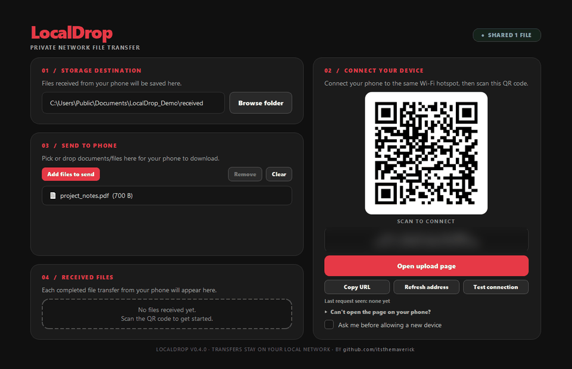
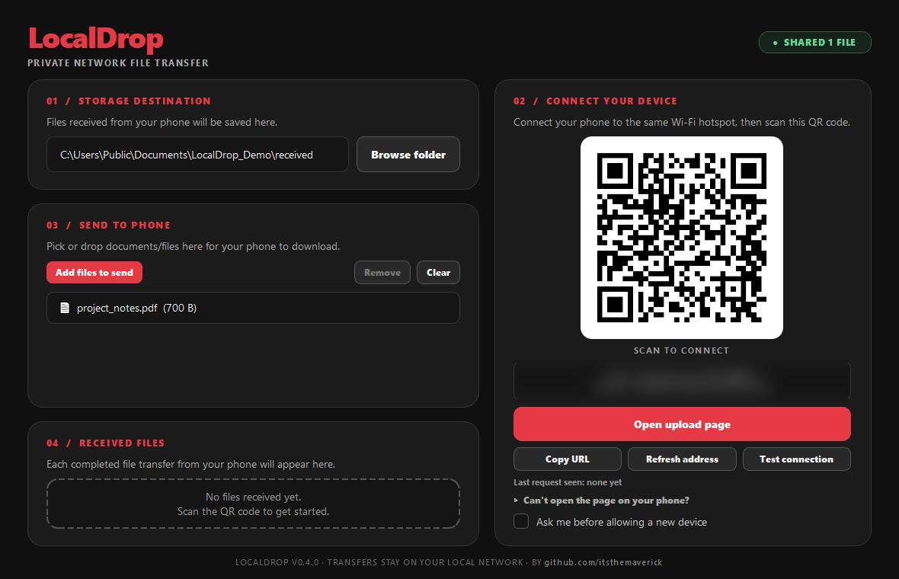
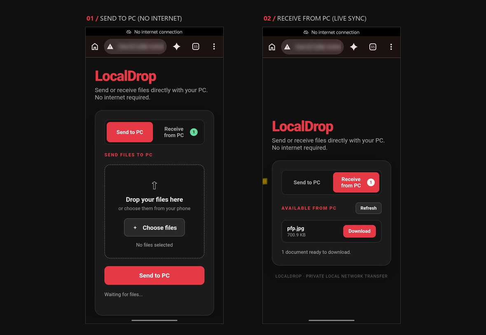
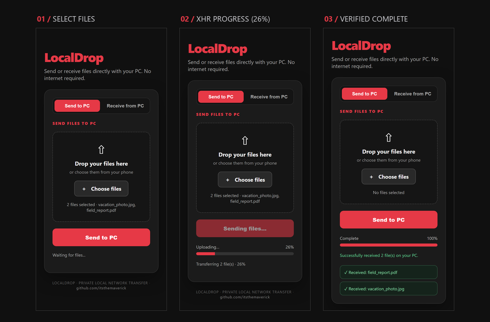
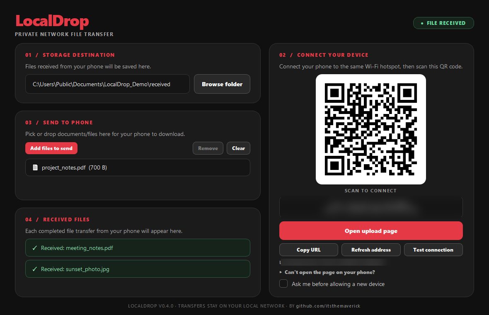

Executive Summary & Key Takeaways:
- Primary Premise: LocalDrop is a two-way local-network file transfer application between a phone browser and a Windows/Linux PC—built not to invent a brand-new product category, but to learn and execute the complete professional software development lifecycle from prototype to packaged release.
- Methodology / Stack: Python 3.12, PyQt5 desktop UI (
1,484-linemain.py), embedded threaded Flask/Werkzeug server, OS-level IPv4/firewall diagnostics (netdiag.py), vanilla HTML/CSS/JS mobile web UI (templates/index.html), 20unittestcases, and PyInstaller + Inno Setup + GitHub Actions packaging.- Core Finding / Metric: Reaches
242.83 MiB/s(254.63 MB/s) upload and238.58 MiB/s(250.17 MB/s) download on 50 MiB local loopback benchmarks (scripts/benchmark.py), passes 20 automated tests in0.813s, and transfers files offline over a phone hotspot with zero companion mobile app.- Direct Answer: Building software around an already-proven idea removes product ambiguity so you can focus 100% on real engineering craft: OS network discovery, cross-thread GUI synchronization, defense-in-depth security boundaries, automated testing, reproducible benchmarking, native installers, and honest verification tracking.
I know AirDrop, LocalSend, and Snapdrop already exist. Moving photos or PDFs between a phone and a laptop over Wi-Fi is not a novel startup pitch.
That was the whole point.
Until LocalDrop, most of my programming lived inside scripts, notebooks, and focused systems experiments. When you only write single-file scripts, you never have to worry about Windows Firewall silently dropping packets on a phone hotspot, PyQt5 crashing because a background Flask thread touched a widget, or an Inno Setup installer leaving stale firewall rules behind on uninstall.
I wanted to build my first real piece of end-to-end software—something you can launch from a desktop icon, scan with a phone that has zero internet access, and trust with real files. Picking a familiar problem let me obsess over the professional software development cycle: architecture, networking, concurrency, threat modeling, testing, benchmarking, CI/CD, packaging, and documentation.

1. From Hotspot ping Experiments to Five Versioned Milestones
LocalDrop started with an Oppo A17 mobile hotspot, two Windows 10 computers, and curiosity. Before writing a single Flask route, I connected both machines to my phone’s hotspot, inspected how DHCP leased private IPv4 addresses, ran ping across them, and tested Windows SMB sharing. Seeing two machines exchange packets with mobile data turned off gave me the core thesis: the local Wi-Fi link is enough—no cloud relay or internet required.
From there, the project evolved across five distinct stages in Git history:
| Version / Tag | Key Engineering Milestones |
|---|---|
v0.0 (AirDrop_v0.0) | 113-line CLI Flask script (app.py), random 128-bit URL token, static QR PNG opened via webbrowser, werkzeug.utils.secure_filename, and commit 1dc19a4 fixing the frontend JSON boundary bug. |
v0.1 (AirDrop_v0.1) | Replaced the terminal script with a PyQt5 GUI (main.py), embedded Werkzeug make_server thread, folder picker, and run_windows.bat / run_linux.sh launchers. |
v0.2 (LocalDrop_v0.2) | Rebranded from AirDrop to LocalDrop (8eb1f84), introduced the dark two-column UI, live received list via UploadSignals, QSystemTrayIcon alerts, and drag-and-drop mobile uploads with an XHR progress bar (d6ec9fa). |
v0.3 (LocalDrop_v0.3, 1.2.1) | Added netdiag.py (multi-adapter IPv4 ranking + Windows/Linux firewall inspection), DeviceApprovals, BLOCKED_EXTENSIONS, atomic .part + os.replace writes, build.py, GitHub Actions (build.yml), and tests/test_localdrop.py. |
v0.4 (LocalDrop_v0.4, 0.4.0) | Expanded to two-way transfers: SharedFiles registry, /shared/<token>, /download/<token>/<file_id>, the 03 / SEND TO PHONE desktop queue, and the mobile Receive from PC tab with 3.5-second live polling. |
The Bug That Taught Me Boundary Discipline (v0.0)
One of my earliest lessons happened in the very first working upload prototype (AirDrop_v0.0). I selected a file on my phone, hit upload, and watched the mobile webpage immediately flash an error. Yet when I checked the received/ folder on disk, the file was right there.
The Flask route had returned {"status": "success", "files": saved}, while my original frontend template tried to format "successfully uploaded" + result.file.json(",")—both the wrong key (file instead of files) and a nonexistent .json() method instead of .join(","). That threw a JavaScript TypeError inside try/catch after the server had already saved the file.
Fixing it in commit 1dc19a4 taught me a habit that shaped the rest of the project: never trust a green HTTP 200 or clean Python traceback in isolation—verify across the actual system boundary.
2. Two-Way Product Experience Without a Companion Mobile App
Forcing someone to install an Android APK or iOS TestFlight build just to pull one PDF off a laptop defeats the convenience of local sharing. Instead, LocalDrop serves a single self-contained mobile web app (templates/index.html, 509 lines of vanilla HTML5, CSS3, and JavaScript) directly from the PC’s embedded Flask server.
I also aligned the PyQt5 QSS stylesheet and the mobile CSS around the same dark design system (#101010 canvas, #1b1b1b cards, #343434 borders, and #e63946 red accents) so both sides feel like one cohesive tool.

On the desktop (LocalDropWindow), four numbered panels organize every action:
01 / STORAGE DESTINATION: Persists your chosen folder insettings.jsoninside the OS config directory (%APPDATA%\LocalDropon Windows,$XDG_CONFIG_HOME/LocalDropon Linux), defaulting to<DesktopLocation>/LocalDropresolved viaQStandardPaths.02 / CONNECT YOUR DEVICE: Displays a customQPainter-rendered QR code (QRWidget), an Address switcher dropdown when multiple LAN adapters exist, Test connection, Last request seen telemetry, a collapsible phone-troubleshooting guide, and the ”Ask me before allowing a new device” approval toggle.03 / SEND TO PHONE: An opt-in drag-and-drop queue (SharedFiles) that exposes explicitly selected documents to your phone—never your broader filesystem.04 / RECEIVED FILES: Prepends the latest 30 incoming filenames in green confirmation rows and fires native OS system-tray notifications (QSystemTrayIcon).

Look closely at the top status bar in the Android screenshots above: No internet connection. The phone is acting purely as an IEEE 802.11 access point and DHCP gateway while Chrome renders the local HTTP app served straight from my PC.

When files finish uploading, both sides reflect reality immediately—the mobile UI renders per-file confirmation cards, and the desktop updates 04 / RECEIVED FILES and flips the header status pill to ● FILE RECEIVED.

3. Real-World Networking & OS Diagnostics (netdiag.py)
If you ask Python’s socket.gethostname() for your IP on a modern Windows developer laptop, it will happily hand you a 172.x WSL2 bridge, a Hyper-V vEthernet switch, Docker, VirtualBox, or a Tailscale CGNAT address (100.x) instead of your Wi-Fi card. And even when you pick the right IP, Windows frequently classifies a new phone hotspot as a Public network—causing Windows Defender Firewall to silently drop inbound TCP SYN packets from your phone.
Solving those two real-world failure modes turned into �TOK0� (782 lines), one of my favorite engineering pieces in the repo:
- Bind
0.0.0.0, advertise dynamically: Werkzeug binds("0.0.0.0", port)acrossPORT_CANDIDATES = range(5000, 5020)(falling back to OS ephemeral port0). That way, switching adapters in the Address dropdown updates the QR URL without restarting the HTTP server. - Two-stage IP discovery: At startup,
probe_default_route_ip()opens aSOCK_DGRAMsocket and connects to192.0.2.1:80(RFC 5737 TEST-NET-1—zero packets actually leave the machine) for an instant initial IP guess. In the background,enumerate_ipv4_candidates()queries PowerShell (Get-NetConnectionProfile,Get-NetIPAddress,Get-NetAdapter) on Windows orip -4 -o addr show scope globalon Linux. - Adapter scoring:
rank_ipv4_candidates()strips loopback,169.254.x.xlink-local, and disconnected interfaces, heavily penalizes virtual/VPN interfaces (-120forvethernet,wsl,hyper-v,docker,tailscale,wireguard,zerotier,openvpn), and boosts Windows Mobile Hotspot (192.168.137.0/24,+36) and physical Wi-Fi (+35) over Ethernet (+25). - Firewall inspection & one-click UAC fix: On Windows,
netdiag.pyinspectsHNetCfg.FwPolicy2rules against the active adapter’sNetworkCategory. If the PC is on a Public hotspot without an allow rule—or has an explicit Block rule—the GUI surfaces an alert banner with an Allow on this network button invokingShellExecuteW(..., "runas", ...)via UAC. On Linux, it inspectsufwandfirewalldand shows the exact5000:5019/tcpallow command. - Loopback + LAN self-test: Clicking Test connection hits both
127.0.0.1and the advertised LAN IP using a per-launchSELF_TEST_NONCEinX-LocalDrop-SelfTestso self-checks verify reachability without polluting Last request seen.
4. Thread-Safe Concurrency Between PyQt5 and Flask
PyQt5 enforces a strict rule: only the main GUI thread may touch widgets. Meanwhile, Werkzeug’s threaded WSGI server (make_server("0.0.0.0", port, app, threaded=True)) spawns daemon worker threads for incoming phone requests, and netdiag.py runs PowerShell/socket probes in short-lived background threads.
To keep the desktop window responsive without race conditions, I built a clean cross-thread boundary:
Werkzeug Worker Threads ──(UploadSignals pyqtSignal)──▶ Qt Main Thread (LocalDropWindow)
│ │
└── blocks on threading.Event (up to 90s) ◀── resolve() ┘ (QMessageBox Allow / Block)UploadSignals(QObject): Worker threads never mutate labels or lists directly; they emitreceived,sent,approval_requested,request_seen,env_probed,self_test_done, andserver_error, which Qt queues safely onto the main event loop.- Locked state registries:
SharedFiles,RequestTracker, andDeviceApprovalseach guard mutable dictionaries and fields behindthreading.Lock. - Interactive blocking approval: When
"Ask me before allowing a new device"is checked, an upload or download from an unseen IP pauses insideDeviceApprovals.check(ip)on athreading.Event(up toAPPROVAL_TIMEOUT = 90seconds) until the owner clicks Allow or Block in a modalQMessageBox—andcloseEvent()callsapprovals.release_all()so waiting threads unblock cleanly on exit.
5. Defense-in-Depth Security & Atomic File Writes
Even on a local Wi-Fi network, binding 0.0.0.0 means you have to think carefully about trust boundaries. Every request passes through layered server-side gates before touching the disk:
| Security Control | Implementation in main.py | Threat Mitigated |
|---|---|---|
| Local-network IP gate | @app.before_request (is_local_client) accepts RFC 1918 private, loopback, link-local, CGNAT 100.64.0.0/10, and ::ffff:... IPv4-mapped IPv6; rejects public IPs with 403. | Accidental exposure if a user port-forwards a router. |
| 160-bit token + constant-time check | TOKEN = secrets.token_urlsafe(20) validated via secrets.compare_digest(). | Guessing upload/download URLs on the LAN. |
| Token log suppression | logging.getLogger("werkzeug").setLevel(logging.ERROR) + RequestTracker logs (ip, timestamp, outcome) only. | Prevents TOKEN in query/path URLs from leaking into localdrop.log. |
| Unicode-safe path sanitisation | safe_filename() normalizes NFC, strips / & \, removes illegal chars, prefixes Windows reserved names (CON, NUL, COM1–9, LPT1–9), caps UTF-8 stems at 200 bytes. | Path traversal (../../etc/passwd) and Windows device-name crashes. |
| Executable extension blocklist | BLOCKED_EXTENSIONS refuses 24 runnable types (.exe, .msi, .bat, .ps1, .vbs, .js, .jar, .dll, .appimage, .desktop, etc.). | Dropping directly runnable payloads onto the PC. |
Atomic claim + .part staging | reserve_destination() claims photo.jpg / photo_1.jpg via open(..., "xb"), writes <name>.part, promotes with os.replace(part, final), unlinks both on error. | Filename race conditions and corrupt half-written uploads. |
| Size & disk-space guards | MAX_REQUEST_BYTES = 8 GiB (413) and MIN_FREE_BYTES = 50 MiB buffer (507 Insufficient Storage). | Filling the host OS volume to 0 bytes. |
| PC-to-phone allowlist | SharedFiles maps explicitly picked/dropped files to opaque random 8-byte file_id tokens; /shared/<token> never exposes local paths. | Arbitrary filesystem browsing from the phone. |
| HTTP response headers | Sets Cache-Control: no-store, Referrer-Policy: no-referrer, and X-Content-Type-Options: nosniff. | Stale caching and referrer leakage. |
Here is the core upload reservation and .part atomic promotion path in main.py:
final = reserve_destination(folder, name) # exclusive "xb" open prevents parallel filename races
part = final.with_name(final.name + ".part")
try:
uploaded_file.save(part)
os.replace(part, final)
except BaseException:
part.unlink(missing_ok=True)
final.unlink(missing_ok=True)
raiseHonest Threat-Model Boundaries
Part of practicing professional engineering is refusing to oversell what your security controls guarantee. LocalDrop currently uses plain HTTP (not TLS/HTTPS) so mobile browsers connect after scanning the QR code without hitting confusing self-signed certificate warnings. That means payloads and the URL token travel in cleartext over the Wi-Fi link, there is no 403 rate limiting yet, and DeviceApprovals caches trust by IPv4 address. For that reason, the documentation explicitly scopes LocalDrop to trusted private LANs and personal hotspots, never public café Wi-Fi.
6. Automated Tests, Reproducible Benchmarks, and Packaging
To move past ”it worked on my laptop once”, I built automated verification, reproducible performance measurement, and OS packaging into the repository:
20 Automated unittest Cases (tests/test_localdrop.py)
tests/test_localdrop.py (482 lines) tests both netdiag.py and the Flask/Qt layers—using QT_QPA_PLATFORM=offscreen when PyQt5 is present and falling back to _install_qt_stub_if_missing() in headless environments. Across 20 tests (observed passing in 0.813s on Windows 10, Python 3.12.4, PyQt5 5.15.11), the suite verifies:
- Virtual/VPN adapter deprioritization and Windows Mobile Hotspot (
192.168.137.1) ranking. - Windows
NetworkCategory/HNetCfg.FwPolicy2parsing and Linuxufw/firewalldhints. is_local_client()edge cases (CGNAT100.64.0.5,::ffff:..., public IP rejection).- Non-leaking
RequestTrackerbehavior (confirmingTOKENnever appears in logs or tracker records). - Multi-threaded
DeviceApprovalsblocking, resolution, andrelease_all()unblocking. safe_filename()traversal/reserved-name/Unicode handling,BLOCKED_EXTENSIONSenforcement, atomic"xb"suffixing,400/413/507HTTP error paths,SharedFilespath non-disclosure, and1366×728desktop layout bounds.
Loopback Throughput Benchmarks (scripts/benchmark.py)
To measure server and disk I/O overhead without Wi-Fi variance, scripts/benchmark.py spins up LocalDrop’s real Flask/Werkzeug server on 127.0.0.1 and runs 3 repetitions across 1 MiB, 10 MiB, and 50 MiB payloads (observed on Windows 10, 4 CPUs, 15.9 GiB RAM, Python 3.12.4):
| Direction | Payload Size | Mean Time (s) | Median Time (s) | Mean Throughput (MiB/s) | Mean Throughput (MB/s) |
|---|---|---|---|---|---|
upload | 1 MiB | 0.0116 | 0.0116 | 86.16 | 90.34 |
download | 1 MiB | 0.0323 | 0.0074 | 30.92 | 32.43 |
upload | 10 MiB | 0.0595 | 0.0592 | 168.00 | 176.16 |
download | 10 MiB | 0.0472 | 0.0445 | 211.84 | 222.13 |
upload | 50 MiB | 0.2059 | 0.2037 | 242.83 | 254.63 |
download | 50 MiB | 0.2096 | 0.2066 | 238.58 | 250.17 |
Because these run over 127.0.0.1 loopback, they isolate Flask/Werkzeug + .part disk write overhead cleanly—real phone transfers are bounded by IEEE 802.11 airtime and phone flash speed rather than LocalDrop’s Python server.
Packaging, Installer, and CI (build.py + localdrop.iss + build.yml)
End users shouldn’t have to install Python or create a .venv. build.py (329 lines) reads APP_VERSION from main.py, freezes the app with PyInstaller (--windowed, one-dir mode so startup skips --onefile temp extraction and keeps {app}\LocalDrop.exe fixed for firewall rules), resolves bundled templates and icons uniformly via sys._MEIPASS (resource_path()), and produces:
- Frozen Windows app (
dist/LocalDrop/LocalDrop.exe):5.9 MBexecutable (5,897,190bytes) with bundled Qt5/Python runtime. - Windows portable archive (
release/LocalDrop-0.4.0-windows-portable.zip):49.0 MB(49,007,360bytes). - Windows Inno Setup installer (
release/LocalDrop-Setup-0.4.0.exe):35.4 MB(35,396,209bytes) using LZMA2 solid compression, Start Menu + optional desktop shortcuts, idempotentnetsh advfirewallrules (including the Public-network hotspot task checked by default), and clean rule removal on uninstall. - Checksums (
release/SHA256SUMS.txt): Generated automatically bywrite_checksums(). - Linux & CI targets:
build.pystages Linux.tar.gz(install.sh+.desktopentry) and.AppImagebuilds, backed by a nativewindows-latest+ubuntu-22.04matrix in.github/workflows/build.yml.
7. Honest Verification Discipline & What I’d Do Differently
One of the biggest mindset shifts between student projects and professional engineering is never claiming something works just because the script compiles. Inside docs/open-items.md and docs/09-testing.md, I explicitly separated what is verified from what still needs testing:
- Verified: Physical Android (
Oppo A17) offline hotspot transfers (Send to PCandReceive from PCwithpfp.jpg), launching the rebuiltdist/LocalDrop/LocalDrop.exe(0.0.0.0:5000), 20unittestcases passing in0.813s, andscripts/benchmark.pyloopback throughput. - Still unverified (tracked in
open-items.md): End-to-end execution of theLocalDrop-Setup-0.4.0.exewizard (shortcuts, UAC firewall creation, SmartScreen, uninstall), building/running the Linux.tar.gz/.AppImagetargets on physical Linux hardware, live GitHub Actions / GitHub Releases execution, and multi-GB or simultaneous multi-phone stress tests.
Looking back across v0.0 to v0.4.0, four engineering lessons stand out for my next project:
- Modularize before
main.pyhits 1,484 lines: Separating Flask routes/security (server.py), file storage (storage.py), and PyQt5 widgets (ui.py) early keeps testability and readability high. - Lock down Semantic Versioning on day one: Moving from
v0.0–v0.2to1.2.1(v0.3) and then0.4.0(v0.4) created avoidable version drift acrossAPP_VERSION,CHANGELOG.md, and Git tags. - Write integration & browser tests early: Automated unit tests caught backend regressions fast, while client-side JavaScript in
templates/index.htmlstill deserves Playwright end-to-end coverage. - Design the token transport cleanly: Passing
TOKENin action URLs was fast to prototype; exchanging the initial QR bootstrap token for anHttpOnlycookie orX-LocalDrop-Tokenheader is an immediate next upgrade.
LocalDrop didn’t need to reinvent file sharing to transform how I build software. Taking a simple local-network idea all the way through OS diagnostics, threat modeling, automated testing, and installer engineering gave me a repeatable blueprint for every software system I ship next.
Source & Engineering Docs: Explore the codebase, architecture diagrams, security model, and full documentation at github.com/itsthemaverick/LocalDrop.